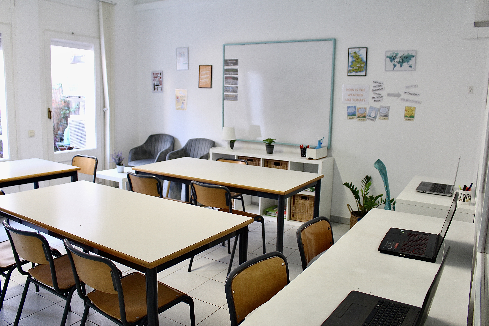
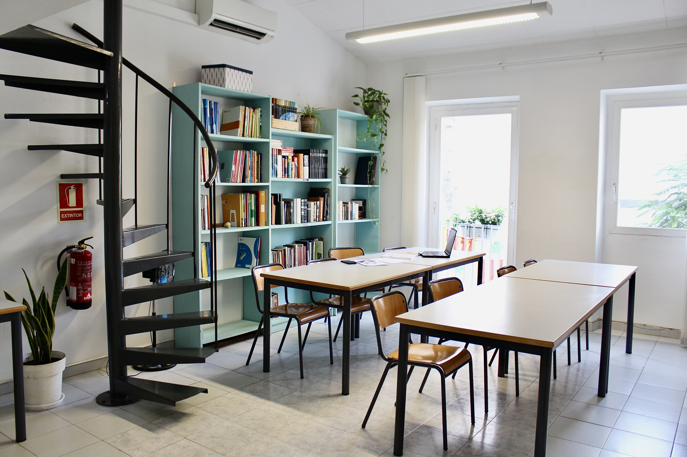
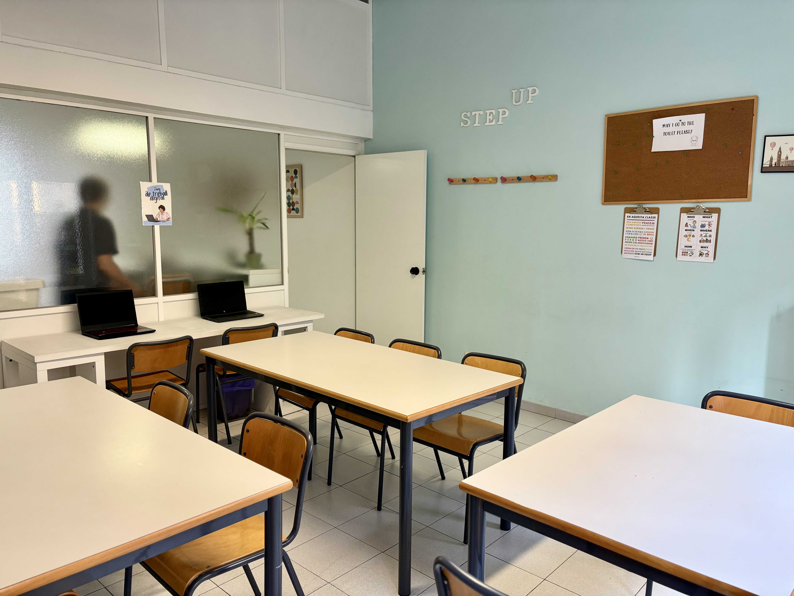
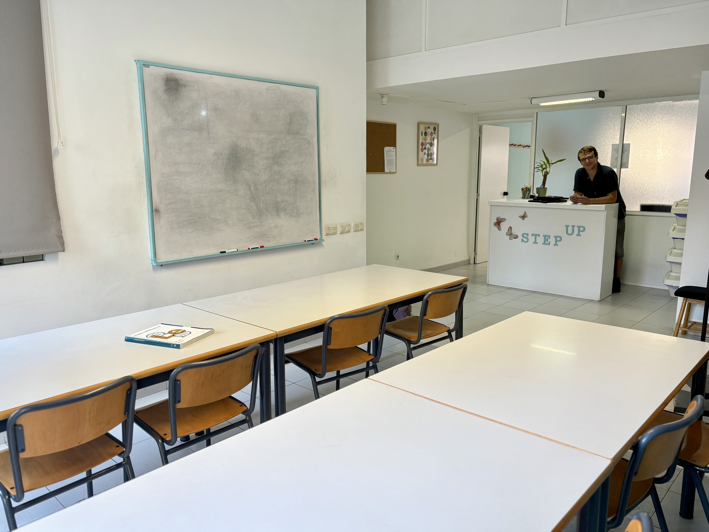
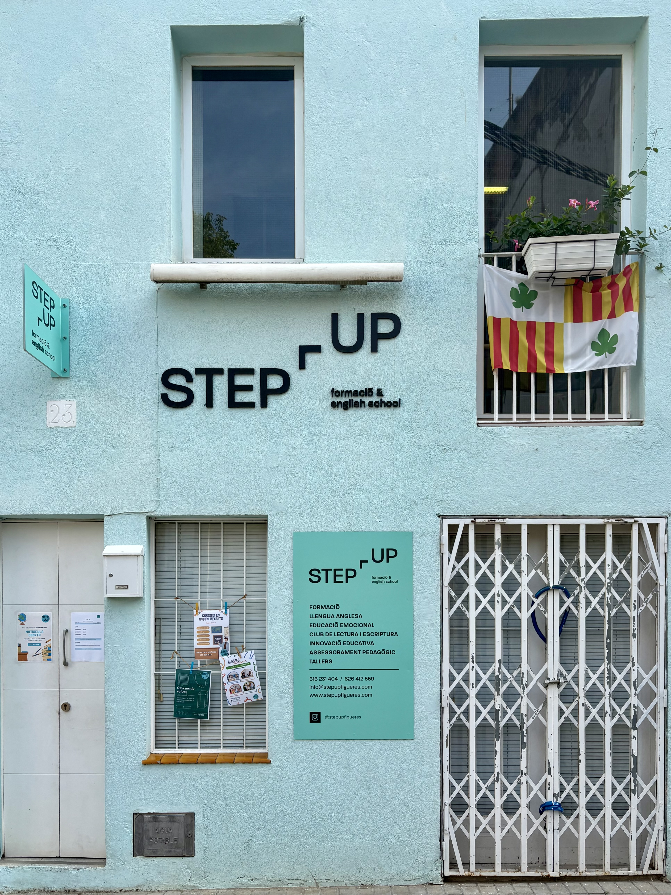

Grups molt reduïts
Màxim 4 alumnes per aula. Això permet una atenció realment personalitzada.
REFORÇ ESCOLAR · FIGUERES
Step Up Figueres t’ajuda a millorar les notes i els hàbits d’estudi a primària, ESO i batxillerat. Al centre de Figueres, amb més de 30 anys d’experiència.

Som l’acadèmia de reforç escolar a tocar de la Rambla de Figueres que s’adapta a cada alumne.
Utilitzem tècniques d’estudi que ajuden a desenvolupar habilitats de comprensió, memorització, organització i gestió del temps per a millorar els resultats acadèmics.
Màxim 4 alumnes per aula. Això permet una atenció realment personalitzada.
Amb experiència i vocació per ensenyar.
Un sistema de treball pensat per aconseguir resultats.
Estem a la teva disposició i fem seguiment de l'aprenentatge.
COM HO FEM
Les necessitats específiques de cada alumne.
Un pla de treball personalitzat i l’apliquem.
Constantment si funciona per oferir sempre el millor servei.
Així aconseguim no només millorar les notes, sinó també els hàbits d’estudi i la confiança de l’alumne.

SERVEIS
A Step Up oferim serveis educatius adaptats a les necessitats de cada alumne, família, AFA, centre educatiu i administració.
Des de classes de reforç i particulars fins a la preparació de PAU, PAP i exàmens oficials, acompanyem cada alumne en el seu procés d’aprenentatge.
FORA DE L’ACADÈMIA
També dissenyem i gestionem activitats educatives per a escoles, AFAs, ajuntaments, espais joves i altres entitats.
Proposem activitats adaptades a cada grup, edat i context, des d’extraescolars setmanals fins a tallers i cursos puntuals.
PER A AFAs I ADMINISTRACIONS
Treballem conjuntament amb escoles, AFAs, ajuntaments i administracions per crear propostes educatives útils, atractives i adaptades a cada realitat.
Tu ens expliques què necessites. Nosaltres hi posem el projecte.
EL NOSTRE ESPAI
Al centre de Figueres, en un espai pensat perquè aprendre sigui més fàcil.



MÉS ENLLÀ DE L'ACADÈMIA
A més de les classes de reforç, portem activitats extraescolars directament a escoles de la comarca.
Pregunta’ns per les activitats disponibles a la teva escola.
EXPERIÈNCIA I GARANTIA
Step Up Figueres és l’evolució de l’antiga Aula de Formació. Portem més de tres dècades acompanyant alumnes i famílies del nostre territori.
FEM EL PRIMER PAS
Contacta’ns i et donarem tota la informació sense compromís.

CONTACTE
Truca’ns, escriu-nos o vine a veure’ns al centre de Figueres.

Aquesta actuació està impulsada i subvencionada pel Departament d'Empresa i Treball i cofinançada per la Unió Europea mitjançant el Fons Social Europeu Plus